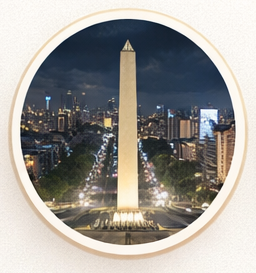
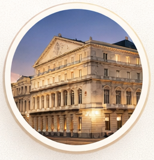
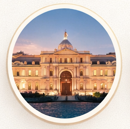

Argentine National Congress
Seat of the Legislative Power, located in the City of Buenos Aires. It is one of the most representative symbols of Argentine democracy.
Seat of the Legislative Power, located in the City of Buenos Aires. It is one of the most representative symbols of Argentine democracy.

Emblematic monument located in the Plaza de la República. It is a major urban symbol and a cultural meeting point.

The main opera house in Buenos Aires and one of the most prestigious in the world for its acoustics.

The presidential palace of Argentina and the seat of the National Executive Power.

Historic building inspired by Dante's Divine Comedy, one of the most unique architectural works in South America.

Architectural jewel built in the early 20th century. One of the largest private residences in the country.